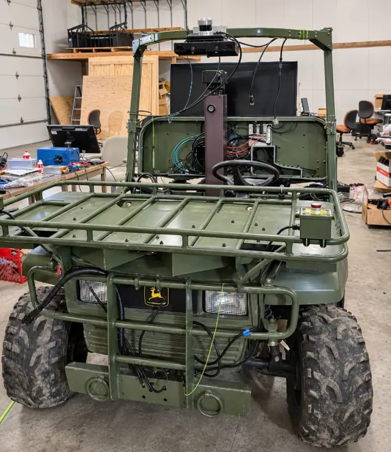
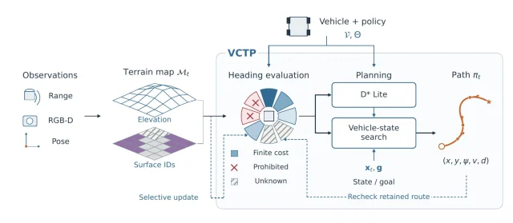
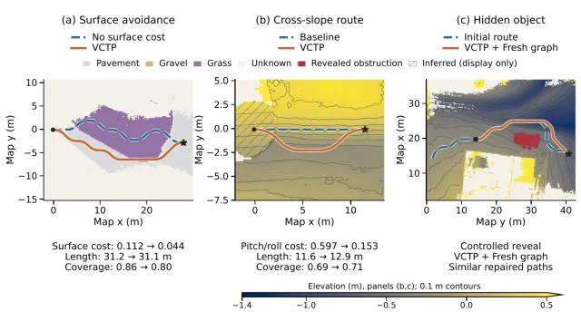

Off-road autonomy / 2026
Vehicle-conditioned terrain planning.
Planning routes that account for the vehicle’s heading, geometry, wheel contacts, and the surfaces beneath it—not only distance across a map.

Problem
A route depends on the vehicle attempting it.
In unstructured terrain, the same map location can produce different outcomes depending on vehicle heading. The body may collide or exceed safe attitude, and individual tires may contact surfaces with very different modeled behavior.
VCTP asks the planner to evaluate the vehicle’s footprint and loaded wheel contacts at multiple headings before choosing a route.
Approach
Connect the terrain model to vehicle state.
Vehicle-Conditioned Terrain Planning (VCTP) evaluates shared elevation and surface-ID layers at eight headings. Body geometry constrains admissibility, while wheel contacts determine modeled surface cost and predicted pitch and roll. D* Lite and vehicle-state search use these evaluations to plan forward and reverse motion.
- Represent elevation and surface identity in a shared 2.5D map.
- Evaluate clearance, body attitude, contact placement, and surface cost by heading.
- Recompute affected body and contact queries as observations change.
- Integrate planning with perception, state estimation, and a full-scale ground platform.


Contribution
From algorithm development to field system integration.
I led the development and field deployment of ground autonomy on the R-Gator, integrating 3D LiDAR and cameras with state estimation, mapping, terrain-aware planning, and vehicle-specific motion constraints. I also prepared software for transfer across additional ground platforms.
The project was developed with collaborators at UIUC and the U.S. Army ERDC-CERL. The paper records authorship and affiliations in full.
Evaluation
Simulation, recorded field data, and selective map updates.
In the current manuscript, VCTP is evaluated in fully observed two-track simulations and through offline planning on R-Gator recordings. The work also verifies selective updates against full recomputation across recorded map changes. These results show when wheel-contact placement and vehicle heading alter route choice; incomplete field coverage leaves some full-route comparisons unresolved.
See the paper for definitions, comparisons, and quantitative results.

